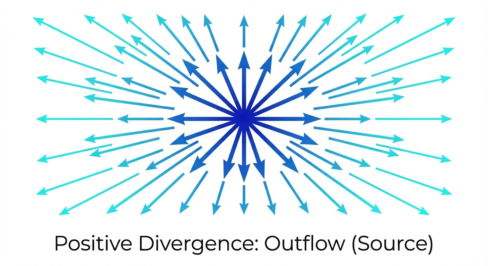
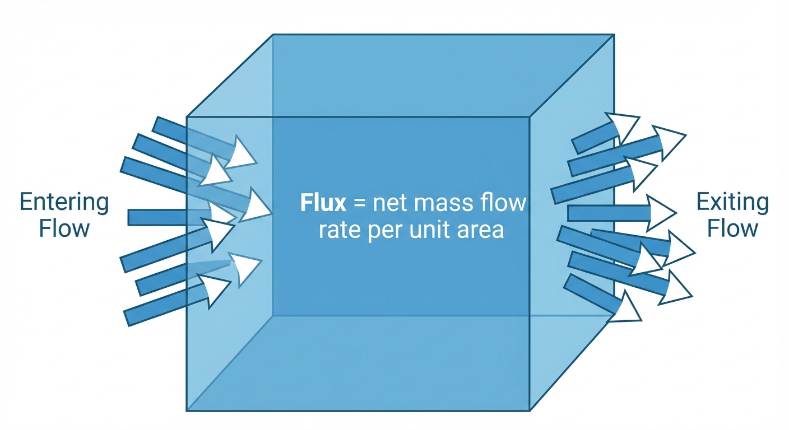

Diffusion & Flow Matching Part 4: The Flow Matching Loss
- The problem: We have conditional vector fields \(u_t(x|z)\), but at generation time we don’t know \(z\)
- The solution: The marginalization trick — training on conditional targets is equivalent to learning the marginal vector field
- The loss: Simply \(\|u_t^\theta(x) - u_t^{target}(x|z)\|^2\), averaged over time \(t\), data \(z\), and noise \(x_0\)
- Why it works: The continuity equation guarantees the marginal vector field follows the marginal probability path
The Flow Matching Loss: Why Training Works
In the previous post, we constructed conditional probability paths and conditional vector fields. But there’s a fundamental problem: these are conditional on knowing the target data point \(z\). At generation time, we don’t know \(z\) — that’s what we’re trying to generate!
This post explains how the marginalization trick solves this problem.
The Problem We’re Solving
Let’s step back and understand what we’re trying to achieve.
Train a neural network \(u_t^\theta(x)\) that can transform noise into samples from \(p_{data}\). To do this, we need a training target — a vector field that the network should learn to approximate.
The ideal target is the marginal vector field \(u_t^{target}(x)\) that follows the marginal probability path \(p_t(x)\). If our network learns this, it can generate samples by:
- Start with noise \(x_0 \sim p_{init}\)
- Follow the learned vector field: \(\frac{dx}{dt} = u_t^\theta(x)\)
- Arrive at a sample from \(p_{data}\) at \(t=1\)
The problem: We can’t compute \(u_t^{target}(x)\) directly! It would require integrating over the entire data distribution — intractable.
The solution: The marginalization trick. It tells us that:
- We can design simple conditional vector fields \(u_t^{target}(x|z)\) (one for each data point \(z\))
- Training on these conditional targets is equivalent to training on the marginal target
- The trained network will learn the marginal vector field — exactly what we need for generation
This is why the marginalization trick is so powerful: it turns an intractable problem into a tractable one.
The Marginalization Trick
Given a conditional vector field \(u_t^{target}(x | z)\) that follows the conditional probability path \(p_t(\cdot | z)\), we can construct a marginal vector field \(u_t(x)\) that follows the marginal probability path \(p_t(x)\):
\[ u_t^{target}(x) = \int u_t^{target}(x | z) \frac{p_t(x | z) p_{data}(z)}{p_t(x)} dz \]
This is the marginalization trick. To prove it, we will use the continuity equation.
The Continuity Equation
Let us consider a flow model with vector field \(u_t^{target}\) with \(X_0 \sim p_{init}\). Then \(X_t \sim p_t\) for all \(0 \leq t \leq 1\) if and only if
\[ \partial_t p_t(x) = -\nabla \cdot (p_t u_t^{target})(x) \quad \text{for all } x \in \mathbb{R}^d, 0 \leq t \leq 1 \]
where \(\partial_t p_t(x) = \frac{d}{dt} p_t(x)\) denotes the time-derivative of \(p_t(x)\).
We will skip the proof of the continuity equation.
\(\nabla \cdot\) is the divergence operator in vector calculus, it’s input is a vector and output is a scalar.
If the divergence is negative, it means that the vector field is pointing inwards towards this point.

The divergence measures the net outflow of density from a point. And the negative divergence means the net inflow of density into this point.

If you are not familiar with this or vector calculus, I recommend you watch the The Divergence of a Vector Field: Sources and Sinks by Steve Brunton. He also talks about the continuity equation in the context of fluid dynamics here: The Continuity Equation: A PDE for Mass Conservation, from Gauss’s Divergence Theorem.
Physics Background
Let me briefly explain the continuity equation, it originates from physics:
\[ \frac{\partial \rho}{\partial t} + \nabla \cdot J = 0 \]
where \(\rho\) is the mass density and \(J\) is the mass flux. The equation was derived from Gauss’s Divergence Theorem, it’s also called mass conservation equation.
The flux is defined as the product of mass density and the the velocity field \(F\):
\[ J = \rho F \]
Intuitively, the flux measures the amount of mass flow rate per unit area through a surface.

The mass conservation equation states that the rate of change of mass in a volume is equal to the net outflow of mass through the surface of the volume. It’s a fundamental law that mass cannot be created or destroyed within a defined system.
In the context of flow models, the mass density is the probability density and the velocity field is the vector field \(u_t(x)\). The continuity equation then becomes:
\[ \frac{d}{dt} p_t(x) = -\nabla \cdot (u_t p_t)(x) \]
This is the continuity equation in the context of flow models.
Proof of the Marginalization Trick
Now we can return to the marginalization trick, we just need to show that the marginal vector field \(u_t(x)\) satisfies the continuity equation.
\[ \begin{aligned} \partial_t p_t(x) &= \partial_t \int p_t(x | z) p_{data}(z) dz \\ &= \int \partial_t p_t(x | z) p_{data}(z) dz \\ &= \int -\nabla \cdot (p_t(x | z) u_t^{target}(x | z)) p_{data}(z) dz \\ &\text{(we used the continuity equation for the conditional probability path $p_t(\cdot | z)$)} \\ &= - \nabla \cdot \left( \int p_t(x | z) u_t^{target}(x | z) p_{data}(z) dz \right) \\ &\text{(linearity of the divergence operator)} \\ &= - \nabla \cdot \left( p_t(x) \int u_t^{target}(x | z) \frac{p_t(x | z) p_{data}(z)}{p_t(x)} dz \right) \\ &\text{(multiplied and divided by $p_t(x)$)} \\ &= - \nabla \cdot (u_t p_t)(x) \\ &\text{(definition of the marginal vector field $u_t(x)$)} \\ \end{aligned} \]
By the Continuity Equation, we have shown that the marginal vector field \(u_t(x)\) satisfies the continuity equation. Therefore, the marginal vector field \(u_t(x)\) follows the marginal probability path \(p_t(x)\) and we are done.
The marginalization trick is what makes flow matching tractable. Here’s the practical workflow:
- Design a simple conditional vector field \(u_t^{target}(x|z)\) (e.g., pointing from noise toward data point \(z\))
- Train by sampling \((z, x)\) pairs and minimizing \(\|u_t^\theta(x) - u_t^{target}(x|z)\|^2\)
- Generate by following the learned \(u_t^\theta\) from noise — it approximates the marginal vector field
The magic: even though we only ever see conditional targets during training, the network learns the marginal vector field that generates the full data distribution.
What’s Next?
We’ve now covered the complete flow matching framework — from vector fields to probability paths to the training loss. But remember from Part 1 that diffusion models take a different approach: they add stochasticity to the process.
In the next post, we’ll see how diffusion models generalize flow matching by adding a noise term to the ODE, turning it into an SDE. We’ll discover:
- How to derive SDEs using infinitesimal updates instead of derivatives
- Why the random term \(\sigma_t dW_t\) enables new behaviors
- The connection between Brownian motion and continuous randomness
References
- Lipman, Y., et al. (2023). Flow Matching for Generative Modeling. ICLR.
- Albergo, M. S., & Vanden-Eijnden, E. (2023). Building Normalizing Flows with Stochastic Interpolants. ICLR.
- Liu, X., Gong, C., & Liu, Q. (2023). Flow Straight and Fast: Learning to Generate and Transfer Data with Rectified Flow. ICLR.